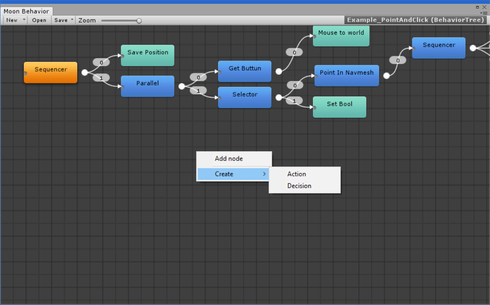

Custom Tasks allows you to put custom events and logic , interacting with you game code and much more.
Creating a custom node
1- On your behavior tree go to the right corner and hit 'Create action'

2- Set the name and select the type, then hit 'Create'

3- Then your script editor should open the file
The files are default saved to: Assets/MoonBehavior/Actions/
Actions
Custom actions are actions that the AI executes. ( eg: Move , Destroying , Animating..)
the default layout for a custom action are:
using System.Collections;
using System.Collections.Generic;
using UnityEngine;
using MoonBehavior.Memory;
using MoonBehavior.Core;
namespace MoonBehavior.Actions
{
[Action]
public class MyAction : Task
{
// OnExecute is called when the action are executed
public override TaskResult OnExecute(MoonAI ai)
{
return TaskResult.Success;
}
}
}
You must return an state (FAILURE , SUCCESS , RUNNING ) depending on what you are doing..
The Action Class must be marked with [Action] attribute and the class must derived from 'Task'.
Decisions
Decisions are an Action type but it are made to execute Tasks as childs.
the default layout for custom decision are:
using System.Collections;
using System.Collections.Generic;
using UnityEngine;
using MoonBehavior.Memory;
using MoonBehavior.Core;
namespace MoonBehavior.Actions.Decisions
{
[Action]
public class MyDecision : Decision
{
// Decisions are the tasks that executes child tasks
public override TaskResult OnExecute(MoonAI ai)
{
for (int i = 0; i < Childs.Length; i++)
{
// To call an child task you must use Execute() Instead of OnExecute()
TaskResult status = Childs[i].Execute(ai);
if (status == TaskResult.Failure)
{
return status;
}
}
return TaskResult.Success;
}
}
}
The Decisions Classes must be marked with [Action] attribute too and the class must derived from 'Decision'.
Displaying Elements
To display elements on the Node Inspector every field must be marked with [Display] Atributte.
if the field are private it must be marked with [SerializeField] too.
code example:
using System.Collections;
using System.Collections.Generic;
using UnityEngine;
using MoonBehavior.Memory;
using MoonBehavior.Core;
namespace MoonBehavior.Actions
{
[Action]
public class MyAction : Task
{
[Display]
public float MyFloat;
// OnExecute is called when the action are executed
public override TaskResult OnExecute(MoonAI ai)
{
Debug.Log(myFloat);
return TaskResult.Success;
}
}
}
it will display 'Myfloat' in the node inspector when you select it.
Aditional Options
Action Attributte:
Category: The category for this task.
Name: An override of the name for this task.
both options takes effect on the nodelist.
Task:
OnEnter(MoonAI ai): called when start executing a Task.
OnExit(MoonAI ai): Called when a task returns SUCCESS or FAILURE.
Decision
SingleChild (Property) : Should this decision contains only one Child ?